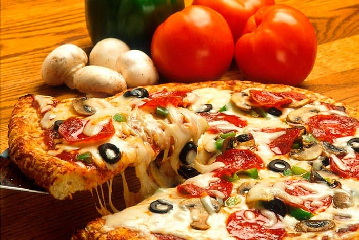

The odin recetas
LA PIZZA

La pizza es una de esas comidas que nadie
rechaza nunca. Aun estando a dieta, buscamos
opciones saludables que se le parezcan.
No podemos escapar de ella, la amamos.
Por eso hemos echo esta receta para ti, para cuando se te antoje una,
puedas hacerla tu mismo ¡En casa!
Ingedientes
Masa para pizza
- 400 gramos de harina de trigo todo uso
- 1 cucharadita de levadura fresca (levadura de panadero)
- 200 ml de agua
- Una pisca de sal
- Una pizca de azucar
- 2 cucharaditas de aceite vegetal
Preparacion de la masa
-
En un envase plástico grande mezcla la levadura y
el agua. Agrega las 2 cucharadas de aceite vegetal,
revuelve un poco con los dedos y comienza a incorporar
la harina de trigo poco a poco. Agrega también la pizca
de sal y de azúcar.
-
Utiliza primero una sola mano para mezclar.
En un principio se te va a pegar insoportablemente en
los dedos, sigue mezclando y agregando la harina poco
a poco.
-
Para este momento la mezcla comenzará a estar menos
pegajosa. Debes seguir amasándola, con las dos manos
ahora, hasta que no se te pegue en los dedos.
Esto toma varios minutos. Si aun se te pega mucho,
ponle más harina.
-
Cuando ya casi no se te pegue, sácala del envase y
ponla en una superficie plana, limpia y con un poquito
de harina. Amasa con fuerza por unos 10 minutos.
Estírala y vuélvela a juntar repetidas veces, la idea
es que la masa se ponga elástica. Si aun se te sigue
pegando un poco en los dedos, agrégale más harina,
pero siempre en pequeñas porciones. Sigue amasando
hasta que luzca compacta y uniforme.
-
Luego de esto coloca la masa para pizza nuevamente en
el recipiente plástico y tápalo con un paño limpio y
oscuro. Deja reposar por 1 hora. Con esto vas a permitir
que la levadura incorporada comience a actuar, haciendo
que aumente su tamaño.
-
Transcurrido este tiempo destapa el envase, seguramente
te encontrarás con que la masa ha crecido. Lo ideal es
que haya duplicado.
-
Ponla en la superficie plana donde la trabajaste
anteriormente con otro poquito de harina.
-
Amásala con fuerza unos 5 minutos y comienza a estirarla
poco a poco, buscando darle la clásica forma redonda de
pizza, ó cuadrada, rectangular, dependiendo de tu bandeja.
-
Parar lograr esto puedes valerte del famoso rodillo.
-
Estira la masa de forma uniforme por todos lados hasta
que consigas el tamaño que necesitas, que en este caso
es el mismo de la bandeja/molde, unos 40 centímetros
de diámetro aproximadamente.
-
Cuando tenga este tamaño traspásala con cuidado a dicha bandeja.
-
Si le falta cubrir superficie, intenta estirar la masa de pizza
con los dedos, con precaución. Si se sale un poco por los lados,
usa un cuchillo para retirar los excesos.
-
Una vez puesta y bien distribuida la masa en el molde, déjala
reposar unos 5 minutos más. Puedes aprovechar este tiempo para
preparar los ingredientes de la pizza y precalentar el horno.
-
Hasta aquí tienes la explicación completa de cómo hacer masa
para pizza. Ahora aprendamos como hacer pizza, sus ingredientes
y su cocción en el horno.
Debemos tomar en cuenta, que tenemos que tener el lugar adecuado para hacer una pizza
Lo que se debe de tomar en cuenta es lo siguiente:
- Un plato lo suficientemente grande: Pan, Bolleria, Harinas
- Cocina: Tipo italiana
- Keyword: Horno
- tiempo de preparacion: 5 min
- Tiempo de coccion: 15 min
ingredientes
- Masa para pizza previamente hecha
- 1/2 lata de tomate ó 4 tomates grandes pelados
- 100 gr de queso mozzarella
- 1/2 pimentón tamaño mediano
- 1/2 cebolla tamaño mediano
- 50 gr de jamón cocido salchicha ó peperoni
- Una pizca de orégano
- Una pizca de sal
Pasos para preparar una pizza
-
Muele los tomates en un procesador de alimentos ó en una licuadora. También puedes
aplastarlos con un tenedor para que queden trozos sueltos. Agrégale una pizca de sal
y de orégano a esta salsa.
-
Ralla el queso mozzarella.
-
Pica todos los demás ingredientes: el jamón, la cebolla y el pimentón en tiras,
y si usas pepperoni ó salchichas, en rodajas muy finas, aunque seguramente
ya te lo habrán vendido así.
ARMADO DE LA PIZZA
-
grega la salsa de tomate sobre tu masa de pizza previamente preparada
y lista en su respectivo molde. Esparce bien la salsa con ayuda de una
cuchara para que quede uniforme en todos lados.
-
A continuación ponle el queso mozzarella rallado y luego los demás ingredientes.
-
Lleva al horno, previamente precalentado a 200 grados centígrados.
-
Deja cocinar por 10-15 minutos. Vigila que no se vaya a quemar,
ya que algunos hornos son traicioneros.
-
El punto exacto de la pizza es: el queso derretido y ligeramente
dorado por arriba, y la masa de pizza ligeramente marrón por debajo.
Debe poder quebrarse con facilidad sin llegar a ser una galleta.
Algunas personas prefieren su pizza más o menos gruesa y
más o menos crocantes por debajo. Esto lo vas a decidir tú según
tu gusto y lo puedes ir adaptando en preparaciones posteriores.
Una vez lista tu pizza, córtala en su clásica forma triangular
¡y disfrútala en familia!